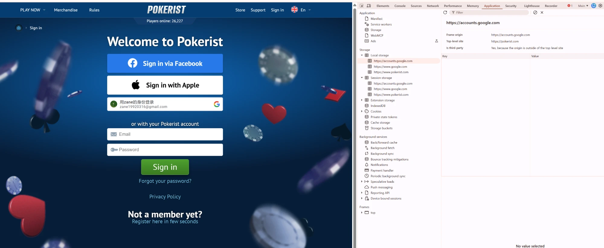
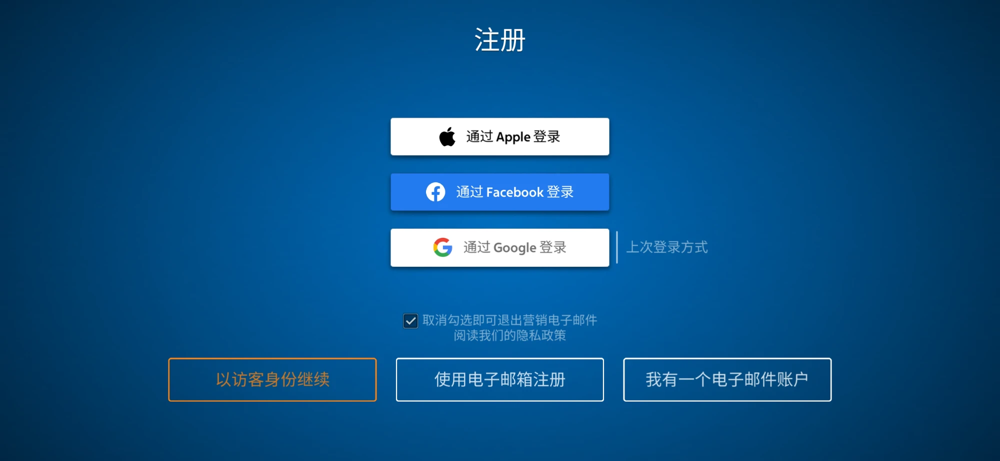
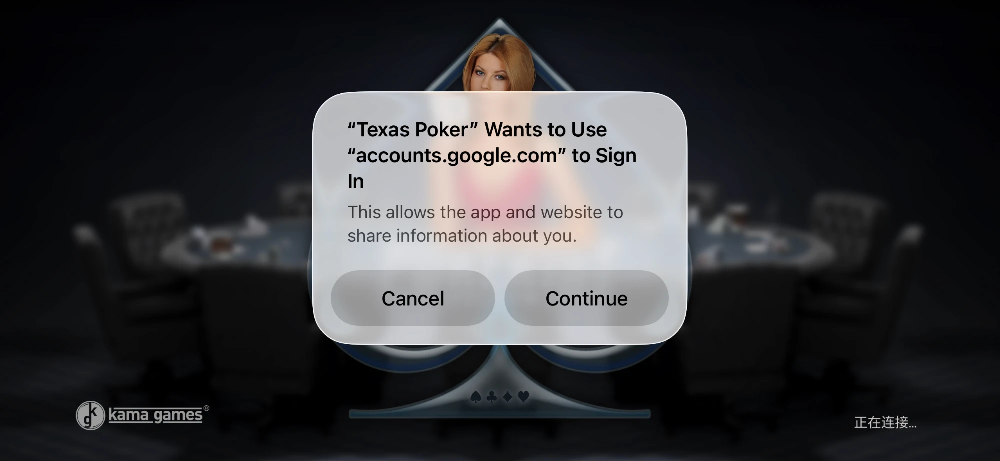

1背景说明Background
Google 登录在不同平台上的原生支持程度不同，这是本次调研和方案选型的出发点：
Native support for Google sign-in differs by platform, which is the starting point for this research and solution selection:
| 平台Platform | 原生 Google 登录支持Native Google Sign-In | 说明Notes |
|---|---|---|
| Android | 原生支持Native support | 可直接调用系统原生的 Google 登录方式，无需额外方案Can call the system’s native Google Sign-In directly; no extra solution needed |
| WebGL（浏览器）WebGL (browser) | 不支持原生No native support | 没有"原生"这个概念，必须通过 JS 方式实现登录There is no “native” layer; sign-in must be implemented in JavaScript |
| iOS | 不支持原生No native support | 没有对应的原生调用方式，同样需要通过 JS 方式实现No equivalent native call is available; it also has to go through a JavaScript approach |
因此本次方案调研聚焦在 WebGL 和 iOS 这两个需要额外接入方式的场景，Android 不在本次范围内。
So this research focuses on WebGL and iOS, the two scenarios that need an additional integration approach. Android is out of scope.
2竞品 Google 登录分析Competitor Google Sign-In Analysis
持续补充中：针对有 Google 登录功能的竞品游戏，抓包分析其具体采用的技术方案。
Work in progress: for competitor games that offer Google sign-in, we capture network traffic to identify the technical approach each one uses.
证据（浏览器 Network 抓包）Evidence (browser Network capture)
- 登录请求打到
identitytoolkit.googleapis.com/v1/accounts:signInWithIdp—— 这是 Firebase Identity Toolkit 的专属接口 - The sign-in request goes to
identitytoolkit.googleapis.com/v1/accounts:signInWithIdp— an endpoint specific to Firebase Identity Toolkit - 请求里的
requestUri指向https://mega-hit-poker.firebaseapp.com/__/auth/handler—— 这个__/auth/handler路径是 Firebase Auth 自动托管的登录中转页，是 Firebase 的特征标识 - The
requestUriin the request points tohttps://mega-hit-poker.firebaseapp.com/__/auth/handler— the__/auth/handlerpath is the sign-in relay page automatically hosted by Firebase Auth, a telltale sign of Firebase - 返回结果里带有
idToken、refreshToken、oauthAccessToken、oauthIdToken等字段，字段命名和结构与本项目 Firebase Auth Demo 实测结果完全一致 - The response contains fields such as
idToken,refreshToken,oauthAccessTokenandoauthIdToken; field names and structure match exactly what we observed in this project’s Firebase Auth Demo


登录交互：One Tap 自动弹出 + 按钮弹窗，两条独立入口Sign-in interaction: One Tap auto-prompt + button popup, two independent entry points
进入页面会先自动弹出 Google 原生的账号选择卡片（One Tap / FedCM），这是用 google.accounts.id.prompt() 实现的自动入口；页面上的"GOOGLE SIGN-IN"按钮是另一条独立的入口，从页面加载起就一直存在，点击后会触发传统的 OAuth 弹窗。关掉 One Tap 卡片后点按钮能弹窗，只是切换到了这条本来就写好的路径，并不是 GIS 库检测到 One Tap 被关闭后自动切换的"降级"行为——这两条入口是 WSOP 前端各自独立实现的。
When the page loads, Google’s native account chooser card (One Tap / FedCM) pops up automatically; this is the automatic entry point implemented with google.accounts.id.prompt(). The “GOOGLE SIGN-IN” button on the page is a separate, independent entry point that exists from page load and opens a traditional OAuth popup when clicked. Clicking the button after closing the One Tap card simply uses this pre-built path; it is not a “fallback” that the GIS library switches to automatically after detecting that One Tap was dismissed. The two entry points are implemented independently in WSOP’s front end.
另外 Google One Tap 本身确实有真实的冷却机制：用户关闭/多次忽略后，Google 会在一段时间内不再自动弹出 One Tap（这个状态由 Google 侧控制），但它只影响"下次是否自动弹出"，跟按钮点击触发弹窗这件事没有关系。
In addition, Google One Tap does have a real cooldown mechanism: after the user dismisses or repeatedly ignores it, Google stops showing One Tap automatically for a while (this state is controlled on Google’s side). It only affects “whether it appears automatically next time” and has nothing to do with the button opening a popup.


网页版：渲染 Google 官方登录按钮Web version: renders the official Google sign-in button

实现方式：renderButton()Implementation: renderButton()
- 页面引入 Google 的脚本
https://accounts.google.com/gsi/client - The page loads Google’s script
https://accounts.google.com/gsi/client google.accounts.id.initialize()传入client_id和回调函数google.accounts.id.initialize()is given theclient_idand a callbackgoogle.accounts.id.renderButton()在指定容器里放一个按钮：Google 会在容器里插入上面那个 iframe。样式只能通过参数调整（theme、size、text、shape、width、locale等），不能自己改按钮内部的样子google.accounts.id.renderButton()places a button in the given container: Google inserts the iframe above into it. The look can only be tuned through parameters (theme,size,text,shape,width,locale, etc.); the inside of the button cannot be restyled- 用户点击后 Google 弹出授权窗口，授权完成会调用回调，
response.credential就是 ID Token（JWT），页面再把它发给自己的后端验签 - After the user clicks, Google opens the authorization window and then calls the callback;
response.credentialis the ID Token (JWT), which the page sends to its own backend for verification
iPhone App：走网页弹出iPhone app: web popup
登录页提供 Apple / Facebook / Google 三个入口，并标出「上次登录方式」。点击 Google 后，iOS 弹出系统提示「“Texas Poker” Wants to Use “accounts.google.com” to Sign In」，随后在系统网页弹层里完成 Google 授权，也就是走网页弹出，不是网页版那种官方按钮，也不是 One Tap。
The sign-in screen offers Apple / Facebook / Google and marks the “last used” method. Tapping Google makes iOS show the system prompt “Texas Poker” Wants to Use “accounts.google.com” to Sign In, and the Google authorization then happens in a system web sheet — i.e. a web popup, not the official button used on the web, and not One Tap.


3推荐方案Recommendation
结合竞品调研结果，WebGL / iOS 场景下的第三方登录，有两条可行路径：
Based on the competitor research, there are two viable paths for third-party sign-in on WebGL / iOS: